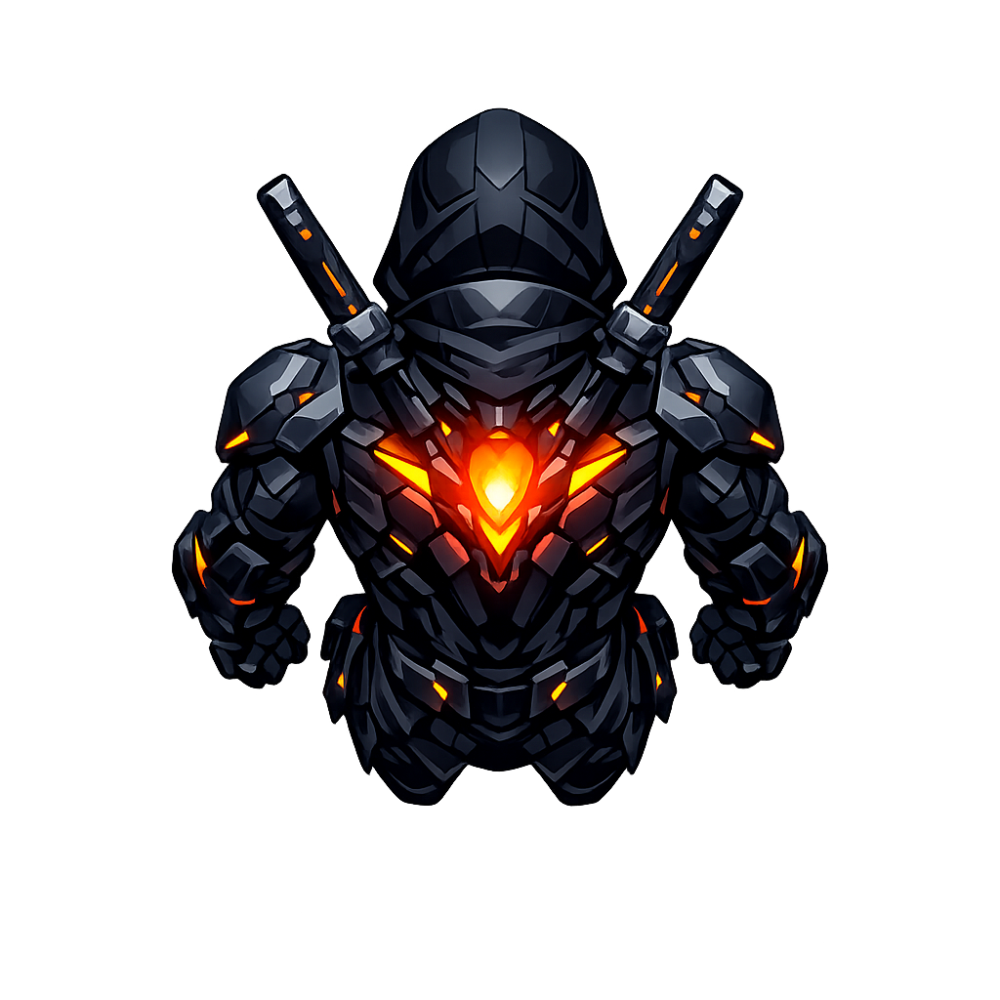

Create a single-subject runtime game asset for a techno-shinobi action game: the player core avatar, centered on a transparent background, up-facing, same compact ember-reactor body language as the approved right-facing version, readable at small scale, clear top/back silhouette, controlled luminous accents, graphic and stylized rather than photoreal, medium detail, no text, no frame, no environment, no floor, no cast shadow, no perspective distortion.